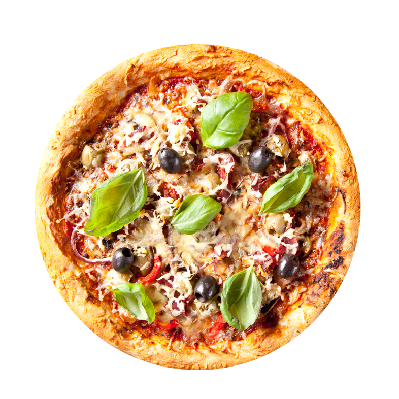

    <!-- <button type="submit" class="card-section-see-recipe-btn">See Recipe</button> -->
    <!-- bu butonun içeriği gelecek ve burası iptal oalcak. denemek için burada dursun -->


  <div id="see-recipes-modal">
    <div class="see-recipes-modal-content">
      <span class="see-recipes-close-btn">&times;</span>
      <h2 id="see-recipes-modal-name">BURAYA APİ İLE TARİF ADI</h2>
      <div id="see-recipes-modal-video">
      

        <!-- <iframe id="see-recipes-modal-video-frame" width="550" height="250" src="" frameborder="0"
          allow="accelerometer; autoplay; clipboard-write; encrypted-media; gyroscope; picture-in-picture"
          allowfullscreen></iframe> -->
      </div>
      <div class="see-recipes-modal-info">
        <p><span id="see-recipes-modal-tags">#</span></p>
        <p><span id="see-recipes-modal-rating">4.5</span> <span id="see-recipes-modal-rating-stars"
            class="stars"></span></p>
        <p><span id="see-recipes-modal-time">30 min</span></p>

      </div>

      <div id="see-recipes-modal-material">malzemeler-ölçüler buraya çekilecek.malzemeler-ölçüler buraya çekilecek.</div>

      <p id="see-recipes-modal-instructions">Preheat the oven to 180°C/350°F/Gas Mark 4. Grease and line the base of an 8 in round spring form cake tin with baking
      parchment\r\nBreak the chocolate into a heatproof bowl and place over a saucepan of gently simmering water and stir
      until it melts. (or melt in the microwave for 2-3 mins stirring occasionally)\r\nPlace the butter and sugar in a mixing
      bowl and cream together with a wooden spoon until light and fluffy. Gradually beat in the eggs, adding a little flour if
      the mixture begins to curdle. Fold in the remaining flour with the cooled, melted chocolate and milk. Mix until
      smooth.\r\nSpread the mixture into the cake tin and bake for 50-55 mins or until firm in the centre and a skewer comes
      out cleanly. Cool for 10 minutes, then turn out and cool completely</p>

      <button id="see-recipes-modal-favorite-btn">Add to favorite</button>
      <button id="see-recipes-modal-rating-btn">Give a rating</button>
        
    </div>
  </div>